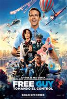
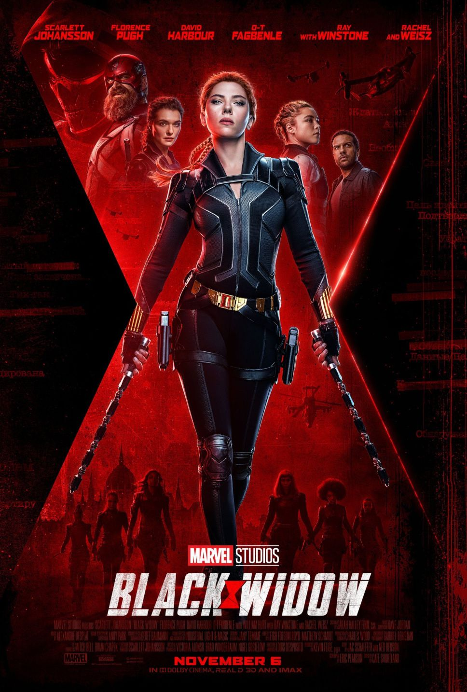
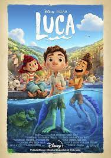

| Póster |
Título |
Sinopsis |
Categoría |
Clasificación |
|  |
Free Guy |
Guy (Ryan Reynolds) trabaja como cajero de un banco, es un tipo alegre y solitario que viste impecable, y al que nada va a amargarle su día. Da igual que le le pisoteen, le atropellen, o le utilicen como rehén durante un atraco a su banco, él sigue sonriendo como si nada. Claro que un día, se va a dar cuenta de que Free City no es exactamente la ciudad que él creía. Guy va a descubrir que en realidad es un personaje no jugable dentro de un brutal videojuego de mundo abierto. Ahora que sabe que es un personaje de videojuego, Guy, acompañado por Molotov Girl (Jodie Comer), decidirá enfrentarse a todos los villanos que asolan la ciudad.
Esta comedia de acción la dirige Shawn Levy, productor de la serie Stranger Things y director de la trilogía de películas de Noche en el museo |
|
|
 |
Resident Evil |
Se trata de un reinicio de la saga cinematográfica creada por Paul W. S. Anderson y protagonizada por Milla Jovovich, así que podemos ir olvidándonos de todo lo visto en las seis películas que la componen porque esto va por otro lado, su objetivo es "volver a los dos primeros videojuegos de la saga y recrear la experiencia visceral que tuve cuando los jugué por primera vez a la par que contar una historia humana sobre una pequeña ciudad norteamericana moribunda que sea relevante en la actualidad y con la que la audiencia se pueda identificar".. |
|
|
|  |
Black Widow |
Marvel Studios presenta la historia de Natasha Romanoff, también conocida como Black Widow. Ella se enfrenta a lo más oscuro de sus cuentas pendientes cuando surge una peligrosa conspiración que tiene lazos con su pasado. Perseguida por una fuerza que no se detendrá ante nada para derribarla, debe lidiar con su historia como espía y con las relaciones rotas que dejó a su paso mucho antes de convertirse en parte de los Vengadores. Scarlett Johansson vuelve como Natasha/Black Widow, Florence Pugh interpreta a Yelena, David Harbour interpreta a Alexei/The Red Guardian y Rachel Weisz es Melina. Black Widow, la primera película en la Fase Cuatro del Universo Cinematográfico de Marvel, dirigida por Cate Shortland y producida por Kevin Feige, llega en Julio a Latinoamérica. |
|
|
 |
Cruella |
Antes de convertirse en Cruella de Vil, la adolescente Estella tiene un sueño. Ella desea convertirse en diseñadora de moda, habiendo sido dotada de talento, innovación y ambición, todo en partes iguales. Pero la vida parece decidida a asegurarse de que sus sueños nunca se hagan realidad. Después de haber terminado sin un centavo y huérfana en Londres a los 12, 10 años después, Estella corre salvajemente por las calles de la ciudad con sus mejores amigos y socios en (insignificantes) delitos, Horace y Jasper, dos ladrones aficionados. Sin embargo, cuando un encuentro casual lleva a Estella al mundo de los jóvenes ricos y famosos, comienza a cuestionar la existencia que se ha construido para sí misma en Londres y se pregunta si, después de todo, podría estar destinada a más. Cuando una estrella de rock prometedora le encarga a Estella que le diseñe una pieza emblemática, comienza a sentirse como si realmente hubiera llegado. Pero, ¿cuál es el costo de mantenerse al día con la multitud rápida? ¿Es un precio que Estella está dispuesta a pagar? —Katie |
|
|
|  |
Luca |
Luca es una película estadounidense de animación por computadora de 2021. Ambientada en la Riviera italiana entre los años 50 y 60, la película se centra en Luca Paguro, un niño monstruo marino con la capacidad de asumir una forma humana mientras está en tierra, que explora la ciudad de Portorosso con su nuevo amigo Alberto Scorfano, experimentando un verano que cambia su vida. Luca se inspira en la infancia de Casarosa en Génova, Liguria; varios artistas de Pixar fueron enviados a la Riviera italiana para investigar la cultura y el entorno italianos. Los monstruos marinos, una «metáfora de sentirse diferente», se basaron libremente en antiguos mitos y folclore regionales italianos. |
|
|
 |
The Perfect Date |
Brooks crea una aplicación de citas para conseguir dinero para la universidad en la que él es siempre el pretendiente. En cada cita actúa de manera diferente, dependiendo de las demandas de las interesadas. Sin embargo, siendo una persona distinta cada noche, descubre que el verdadero Brooks Rattigan no es quien creía que era, y sorprendentemente, encuentra a la chica de sus sueños. |
|
|